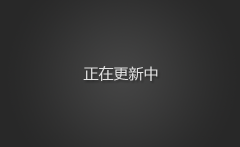

<!DOCTYPE html>
<html lang="zh-CN">
<head>
    <meta charset="UTF-8">
    <title>频聚合页</title>
    <style type="text/css">
        *{
            margin: 0;
            padding: 0;
        }
        li{
            list-style:none;
        }
        img{
            vertical-align: top;
        }
        body {
            width: 100%;
            height: 100%;
            background: #000 url(img/bg.png);
        }
        .video_list li{
            position: relative;
            float: left;
            width: 407px;
            height: 249px;
            cursor: pointer;
            overflow: hidden;
        }
        .video_list li img{
            width: 407px;
            height: 249px;
        }
        .video_list .info{
            position: absolute;
            width: 100%;
            height: 100%;
            left:-100%;
            top: 0;
        }
        .video_list .info strong { width:50px; height:50px; background:url(img/play_gallery.png); position:absolute; top:50%; left:50%; margin:-25px 0 0 -25px; z-index:2; }
        .video_list .info h2 { width:100%; text-align:center; position:absolute; left:0; bottom:20px; z-index:2; color:#fff; font-size:18px; }
        .video_list .info span { width:100%; height:100%; filter:alpha(opacity=50); opacity:0.5; background:#000; position:absolute; top:0; left:0; z-index:1; }
        #prev_page ,#next_page { width:46px; height:46px; position:absolute; top:50%; margin-top:-23px; z-index:2; filter:alpha(opacity=50); opacity:0.5; }
        #prev_page:hover ,#next_page:hover { filter:alpha(opacity=100); opacity:1; }
        #prev_page { left:20px; background:#cb0a56 url(img/video_info_btn1.png) no-repeat center; }
        #next_page { right:40px; background:#cb0a56 url(img/video_info_btn2.png) no-repeat center; }
    </style>
    <script type="text/javascript" src="js/data.js"></script>
    <script type="text/javascript" src="js/startMove.js"></script>
</head>
<body>
    <div id="video_list" class="video_list" style="margin-left: 200px;">
      <div id="bar">
        <a href="javascript:;" style="top: 0px; height: 244.082px;"></a>
      </div>
      <a id="prev_page" href="javascript:;"></a>
      <a id="next_page" href="javascript:;"></a>
      <ul></ul>
    </div>
</body>
</html>
<script type="text/javascript">
    /**
     * [$ 选择器]
     * @param  {[type]} element [css选择器]
     * @param  {[type]} parents [父级（默认是document）]
     * @return {[type]}         [选择元素集合]
     */
    window.$ = function(element,parents){
        return (parents || document).querySelectorAll(element);
    }
    /**
     * [extend 对象拷贝]
     * @param  {[type]} target [目标对象]
     * @param  {[type]} source [拷贝对象]
     * @return {[type]}        [目标对象]
     */
    function extend(target, source) {
        for (var p in source) {
            if (source.hasOwnProperty(p)) {
                target[p] = source[p];
            }
        }
        return target;
    };
    /**
     * [HoverDir 鼠标移动方向跟随]
     * @param {[type]} element [元素]
     * @param {[type]} options [参数配置]
     */
    var HoverDir = function(element,options){
        this.$el = element;
        this._init(options || {});
    };
    /**
     * [defaults 默认参数]
     * @type {Object}
     */
    HoverDir.defaults = {
        speed : 300,    //默认速度
        easing : 'linear',  //默认运动形式
        hoverDelay : 0,   //是否延迟
        inverse : false   //是否反向运动
    };
    /**
     * [_init 初始化]
     * @param  {[type]} options [传入参数]
     * @return {[type]}         [无]
     */
    HoverDir.prototype._init = function(options){
        //设置配置参数
        this.options = extend(HoverDir.defaults, options );
        //绑定事件
        this._loadEvents();
    };
    HoverDir.prototype._loadEvents = function(){
        var _this = this;
        this.$el.addEventListener('mouseenter',function(event){
            var offset = this.getBoundingClientRect();
            var $hoverElem = $('div[data="hoverdir"]',this)[0];
            if (!$hoverElem.innerHTML){
                return ;
            }
            var direction = _this._getDir( this, { x : event.clientX, y : event.clientY } );
            var styleCSS = _this._getStyle( direction , offset);
            $hoverElem.style.display = 'none';
            $hoverElem.style.left = styleCSS.from.left + 'px';
            $hoverElem.style.top = styleCSS.from.top + 'px';
            clearTimeout( _this.tmhover );
            _this.tmhover = setTimeout( function() {
                $hoverElem.style.display = 'block';
                _this._applyAnimation( $hoverElem, styleCSS.to, _this.options.speed );
            }, _this.options.hoverDelay );
        },false);
        this.$el.addEventListener('mouseleave',function(event){
            var offset = this.getBoundingClientRect();
            var $hoverElem = $('div[data="hoverdir"]',this)[0];
            if (!$hoverElem.innerHTML){
                return ;
            }
            var direction = _this._getDir( this, { x : event.pageX, y : event.pageY } );
            var styleCSS = _this._getStyle( direction , offset);
            clearTimeout( _this.tmhover );
            _this._applyAnimation( $hoverElem, styleCSS.from, _this.options.speed);
        },false);
    };
    /**
     * [_getDir 获取方向]
     * @param  {[type]} $el         [当前元素]
     * @param  {[type]} coordinates [鼠标位置]
     * @return {[type]}             [方向 顺时针 TRBL=0123]
     */
    HoverDir.prototype._getDir = function($el,coordinates){
        var offset = $el.getBoundingClientRect();
        var w = offset.width,
            h = offset.height,
            //计算x和y以获得从该x和y在div的中心的角度。
            //获取相对于DIV的中心和“正常化”它的x值
            x = ( coordinates.x - offset.left - ( w/2 )) * ( w > h ? ( h/w ) : 1 ),
            y = ( coordinates.y - offset.top  - ( h/2 )) * ( h > w ? ( w/h ) : 1 ),
            //角度和从鼠标附带在方向/出门顺时针（TRBL=0123）;
            //首先计算点的角度，
            //加180度摆脱负值
            //90分拿到象限
            //4加3，做模到象限转移到一个适当的顺时针TRBL（上/右/下/左）**/
            direction = Math.round( ( ( ( Math.atan2(y, x) * (180 / Math.PI) ) + 180 ) / 90 ) + 3 ) % 4;
        return direction;
    };
    /**
     * [_getStyle 获取入口位置和出口位置]
     * @param  {[type]} direction [方向]
     * @param  {[type]} offset    [获取宽高]
     * @return {[type]}           [入口位置和出口位置]
     */
    HoverDir.prototype._getStyle = function(direction,offset){
        var fromStyle, toStyle,
            slideFromTop = { left : 0, top : -offset.height },
            slideFromBottom = { left : 0, top : offset.height },
            slideFromLeft = { left : -offset.width, top : 0 },
            slideFromRight = { left : offset.width, top : 0 },
            slideTop = { top : 0 },
            slideLeft = { left : 0 };
            console.log(direction)
        switch( direction ) {
            case 0:
                fromStyle = !this.options.inverse ? slideFromTop : slideFromBottom;
                toStyle = slideTop;
                break;
            case 1:
                fromStyle = !this.options.inverse ? slideFromRight : slideFromLeft;
                toStyle = slideLeft;
                break;
            case 2:
                fromStyle = !this.options.inverse ? slideFromBottom : slideFromTop;
                toStyle = slideTop;
                break;
            case 3:
                fromStyle = !this.options.inverse ? slideFromLeft : slideFromRight;
                toStyle = slideLeft;
                break;
        }
        return { from : fromStyle, to : toStyle };
    };
    /**
     * [_applyAnimation 运动效果]
     * @param  {[type]}   el       [需要运动元素]
     * @param  {[type]}   styleCSS [目标位置]
     * @param  {[type]}   speed    [速度]
     * @param  {Function} callback [回调函数]
     * @return {[type]}            [无]
     */
    HoverDir.prototype._applyAnimation = function(el, styleCSS, speed,callback) {
        mTween(el, styleCSS, speed, this.options.easing, callback);
    };
    var data = data.data;
    var oUl = $('#video_list ul')[0];
    var str = '';
    var iNum = 0;
    for(var i=0; i < 12; i++){
        str += '<li><div class="info" data="hoverdir"></div></li>'
    };
    oUl.innerHTML = str;
    move();
    var aLi = $('#video_list li');
    for(var i=0; i < 12; i++){
        new HoverDir(aLi[i],{});
    }
    var max = Math.ceil(data.length/12);
    console.log(max)
    var timer = null;
    var n = 0;
    function move(){
      clearInterval(timer);
      timer = setInterval(function(){
        if(n < 12){
          n ++;
          createList(aLi[n-1],n-1);
        }else{
          clearInterval(timer);
        }
      },300);
    }
    function createList(obj , i){
      var start = iNum*12;
      var current = start+i;
      var oDiV = $('div[data="hoverdir"]',obj)[0];
      var oImg = $('img',obj)[0];
        try {
            oDiV.innerHTML = '<strong></strong><h2>'+data[current].name+'</h2><span></span>';
            mTween(oImg,{'opacity':0},300,'easeIn',function(){
                oImg.src = data[current].img;
                mTween(oImg,{'opacity':100},300,'easeIn');
            });
        } catch(error) {
            oDiV.innerHTML = '<strong></strong><h2>数据更新中...</h2><span></span>';
            mTween(oImg,{'opacity':0},300,'easeIn',function(){
                oImg.src = 'img/video/default.png';
                mTween(oImg,{'opacity':100},300,'easeIn');
            });
        }
    }
    $('#prev_page')[0].onclick = function(){
        if (iNum === 0){
            iNum = max-1;
        }else {
            iNum--;
        }
        n = 0;
        move();
    };
    $('#next_page')[0].onclick = function(){
        if (iNum === max-1){
            iNum = 0;
        }else {
            iNum++;
        }
        n = 0;
        move();
    };
</script>
